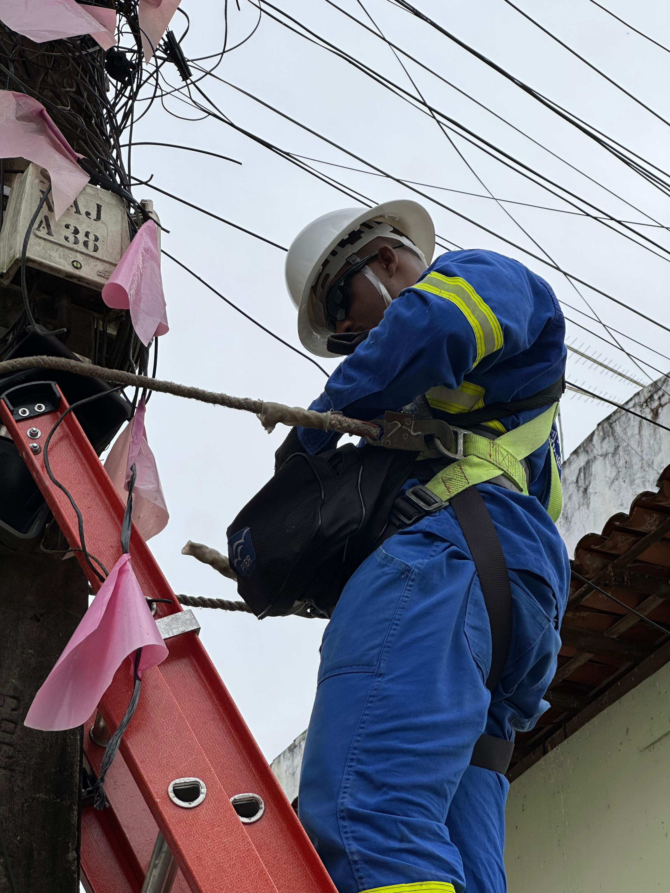

Trilha do Conector 🚀 - Técnico Autônomo
📖 Módulo 2: Segurança em Campo
A segurança é sua responsabilidade intransferível. Cada passo, desde a análise do ambiente até a finalização do serviço, deve ser guiado pelos mais altos padrões de segurança.
2.1. Análise Preliminar de Risco (APR)
Antes de qualquer outra ação, realize a APR. Esta é sua ferramenta mais importante para garantir um ambiente de trabalho seguro. Marque os itens para confirmar a inspeção:
- Verificar condições climáticas (chuva, ventos fortes, raios).
- Inspecionar a condição do poste (rachaduras, inclinação, ferragens).
- Analisar a proximidade e condição da rede elétrica.
- Verificar o terreno para a base da escada (firme e nivelado).
- Analisar o fluxo de veículos/pedestres para posicionar a sinalização.
- Confirmar que todos os seus EPIs estão em perfeito estado de uso.
2.2. EPIs - Seu Equipamento de Sobrevivência
O uso correto e a inspeção diária dos seus Equipamentos de Proteção Individual são obrigatórios.
- Capacete com Jugular: Proteção contra impactos. A jugular é essencial para que não caia.
- Óculos de Proteção: Proteção contra fragmentos de fibra, que são como vidro. O uso é mandatório durante todo o manuseio.
- Luvas de Proteção e Botas de Segurança: Proteção contra cortes, perfurações e impactos.
- Cinto de Segurança tipo Paraquedista: Inspecione as costuras, talabartes e engates antes de CADA subida.
- Uniforme e Colete de Alta Visibilidade: Garante que você seja visto, prevenindo acidentes.
🖼️ 2.3. Cenário de Risco: Identificação e Ação
Identificar um risco é o primeiro passo. Tomar a ação correta é o que garante sua segurança. Clique nos pontos de perigo para entender o protocolo.

Risco Elétrico (NR-10): Mantenha a "distância de segurança" da rede elétrica. Na dúvida, não execute. É sua decisão interromper a atividade sob risco de descarga atmosférica.
Cuidados com a Fibra: Garanta o descarte correto dos fragmentos em recipiente apropriado. Nunca olhe diretamente para a ponta de um cabo ativo.
Trabalho em Altura (NR-35): Inspecione a escada, garanta que ela esteja em base firme e amarrada ao poste. Seu cinto deve estar sempre ancorado em um ponto seguro. A sinalização da área com cones é obrigatória.
💡 Simulado - Módulo 2
1. Qual a ação mais importante antes de posicionar a escada em um poste?
2. O trabalho em altura sob chuva leve, sem raios, é permitido para adiantar o serviço.